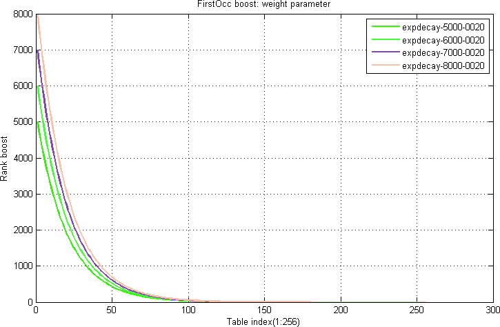
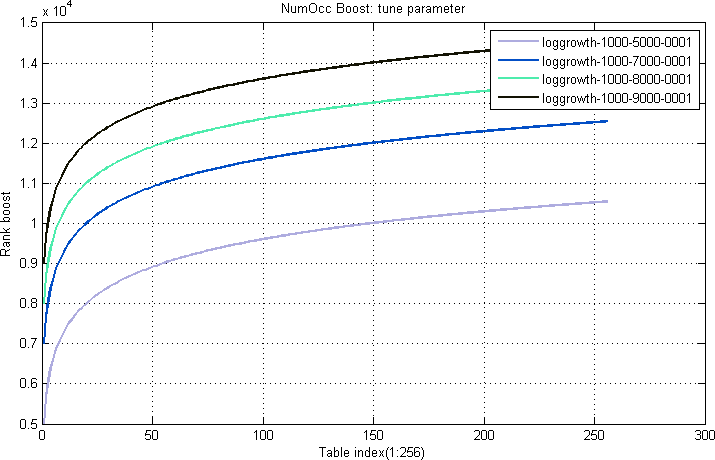

This document presents the rank types that are supported by nativeRank and the main ranking features that are controlled through the use of them. See the native rank reference document for detailed information on the nativeRank feature. First, the generic mechanisms for ranking control through rank types are explained. Then, each ranking type will be described, with details of how it uses the different ranking controls.
This section describes the different generic ranking controls that are influenced by the ranking type selection.
The position of the first occurrence of a term in a document field is called the FirstOcc. A FirstOcc boost table map a particular value x of FirstOcc to a rank contribution. For FirstOcc equal to or above the size of the table (default 256), the value for the last table element is used.
| (1) | firstocc(x) = expdecay(x) = w * e-x/t |
where w is the weight (controls the amplitude) and t is the tune parameter (controls the slope). The curve shapes are illustrated in Figure 1-2.

The number of occurrences of a term in a document field is called the NumOcc. A NumOcc boost table map a given number of occurrences x to a particular rank contribution. For terms occurring more than or equal to the size of the table (default 256), the value for the last table element is used.
| (2) | numocc(x) = loggrowth(x) = w * log(1 + x / s) + t |
where w is the weight (controls the amplitude) and t is the tune parameter (controls the offset). s is a scale parameter (controls the sensitivity to the numocc variable x).


When a query with more than one query term is executed, pairwise proximity is calculated between pairs of query terms. For a given pair, the actual ranking value will be based on lookup in a proximity boost table.
For a given pair of query-terms a b, the distance in the document field between the positions of the terms is calculated such that if the terms occur in the same order in both the query and the document, the distance will be positive. If the order is reversed from the query to the document, the value will be negative. The absolute value is in both cases the absolute difference in word positions in the document.
For proximity calculations in the forward direction, the rank boost will be selected from the forward proximity table. For reversed proximity, a similar reverse proximity table is used.
Typically, the rank score of the forward proximity table will be higher than the reverse proximity table, giving an overall asymmetrical ranking function.
| (3) | prox(x) = expdecay(x) = w * e-x/t |
where x is the absolute difference between the query term distance and document term distance, w is the weight (controls the amplitude) and t is the tune parameter (controls the slope). Refer to Figure 5 and 6: The same formula as in the FirstOcc examples are used, but with different parameters.


The weightboost table is for calculating the rank boost contribution from attributes. Equation 4 shows how attribute weight values are used for table look-ups in the weightboost table.
| (4) | weight(x) = sign(x)*weightboost[abs(x)] |
where sign(x) is the sign of x, and abs(x) is the absolute value of x. Hence, attributes can have negative rank contributions. The argument x used as input in this boost table is dependent on the attribute type:
This section describes each individual ranking type, and details how it uses the different generic ranking controls.
This ranking type is for fields that contain the identity of the document. A title of a book, or product name of a product are examples of this.
The title will usually appear early in a document. So the FirstOcc table starts high and descends sharply.
The title is usually not repeated, so the number of occurrences is not that important. It starts out at a medium height, and ascends slowly.
Identity terms are very well connected, and fields are fairly small. So the proximity table has a sharp and high peak, with the importance falling rapidly.
Supported by nativeRank using these tables:
This is for fields that contain information directly relating to the document, describing what it is. A description field of a catalog, or a feature list of a product specification are typical examples.
The order of occurrences is somewhat important, as usually the most important features will be put up first. The FirstOcc boost table starts out at a medium height, and falls fairly slowly.
The about-ness of the description is very much related to how many times a descriptive term is used. So the NumOcc boost table will start out fairly low, but climb high, with the maximum gain (curvature point) around 5 occurrences.
Proximity is fairly important for about-ness. The proximity boost will be somewhat similar to the identity type, although it will be somewhat lower at the peak, and have a slightly shallower falloff.
about is the default ranking type used when it is not explicitly specified which type to use.
Supported by nativeRank using these tables:
This is for search in attributes when they are used as tags, for example name tags for images that may be updated frequently. The tags rank type uses a logarithmic table to give more relative boost in the low range: As tags are added they should have significant impact on rank score, but as more and more tags are added, each new tag should contribute less.
The tags rank type is based on the about rank type, i.e. only the weight boost table is different. For the other rank types a 1-to-1 linear table is used, except for the empty rank type, which has a table with zeros.
Supported by nativeRank using this table:
This is used for fields where you do not want matches to have any impact on relevancy. Use this for instance when the field contains keywords used to partition the dataset.
The empty rank type is also supported by nativeRank.